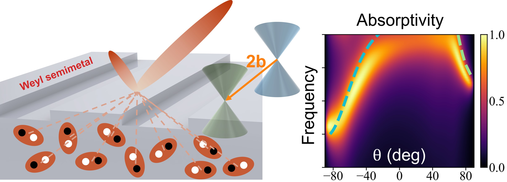
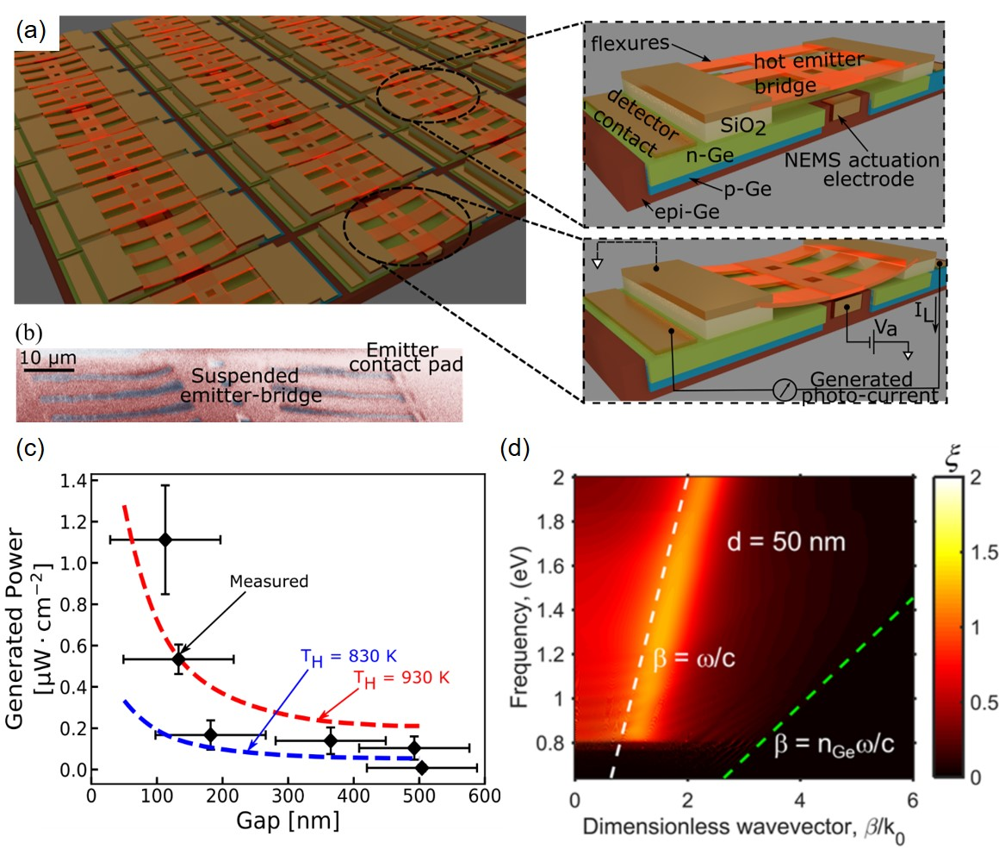

Current research directions
- Thermal photonics and plasmonics
- Photon-mediated heat engines and refrigerators
- Electronic and photonic circuits
- Radiative properties: tuability, symmetry, nonreciprocity, topology, and beyond
- Enhanced radiative heat transfer
- Photon chemical potential and light emission from nonequilibrium bodies
- Solar energy harvesting and radiative cooling
- Electromagnetic theory
- Quantum effects in photon transport processes
Research projects (updating)
Objects around us constantly emit and absorb thermal radiation. The emission and absorption processes are governed by two fundamental radiative properties: emissivity and absorptivity. For reciprocal systems, the emissivity and absorptivity are restricted to be equal by Kirchhoff's law of thermal radiation. This restriction limits the degree of freedom to control thermal radiation and contributes to an intrinsic loss mechanism in photonic energy harvesting systems. Existing approaches to violate Kirchhoff's law typically utilize magneto-optical effects with an external magnetic field. However, these approaches require either a strong magnetic field (~ 3T), or narrow-band resonances under a moderate magnetic field (~ 0.3T), because the non-reciprocity in conventional magneto-optical effects is weak in the thermal wavelength range. Here, we show that the axion electrodynamics in magnetic Weyl semimetals can be used to construct strongly nonreciprocal thermal emitters that near completely violate Kirchhoff’s law over broad angular and frequency ranges, without requiring any external magnetic field. Related Paper
Energy transferred via thermal radiation between two surfaces separated by nanometers distances (near-field) can be much larger than the blackbody limit. However, realizing a scalable platform that utilizes this energy exchange mechanism to generate electricity remains a challenge. The challenge lies in designing a platform that can separate two large-area surfaces by a small gap while simultaneously maintaining a large temperature differential. The gap needs to be small enough to induce near-field enhancement while preventing surface contact under the effects of intrinsic film stresses, thermal stresses, surface forces (Casimir forces, Van der Waals forces, etc.) and fabrication process variations. Recent demonstrations of near-field thermo-photovoltaic rely on non-scalable external nano-positioners or on intermediate spacers that impose a limit on the near-field enhancement. Here, we present a fully integrated, reconfigurable and scalable platform operating in near-field regime that performs controlled heat extraction and energy recycling. Our platform relies on an integrated nano-electromechanical system (NEMS) that enables precise positioning of a thermal emitter within nanometers distances from a room-temperature germanium photodetector to form a thermo-photovoltaic (TPV) cell. Our electrostatically controlled NEMS switch consumes negligible tuning power and relies on scalable silicon-based process technologies. We demonstrate over an order of magnitude enhancement of power generation in our TPV cell by actively tuning the gap between a hot emitter. The significant enhancement at such small distances is a clear indication of near-field heat transfer effect. Related Paper
